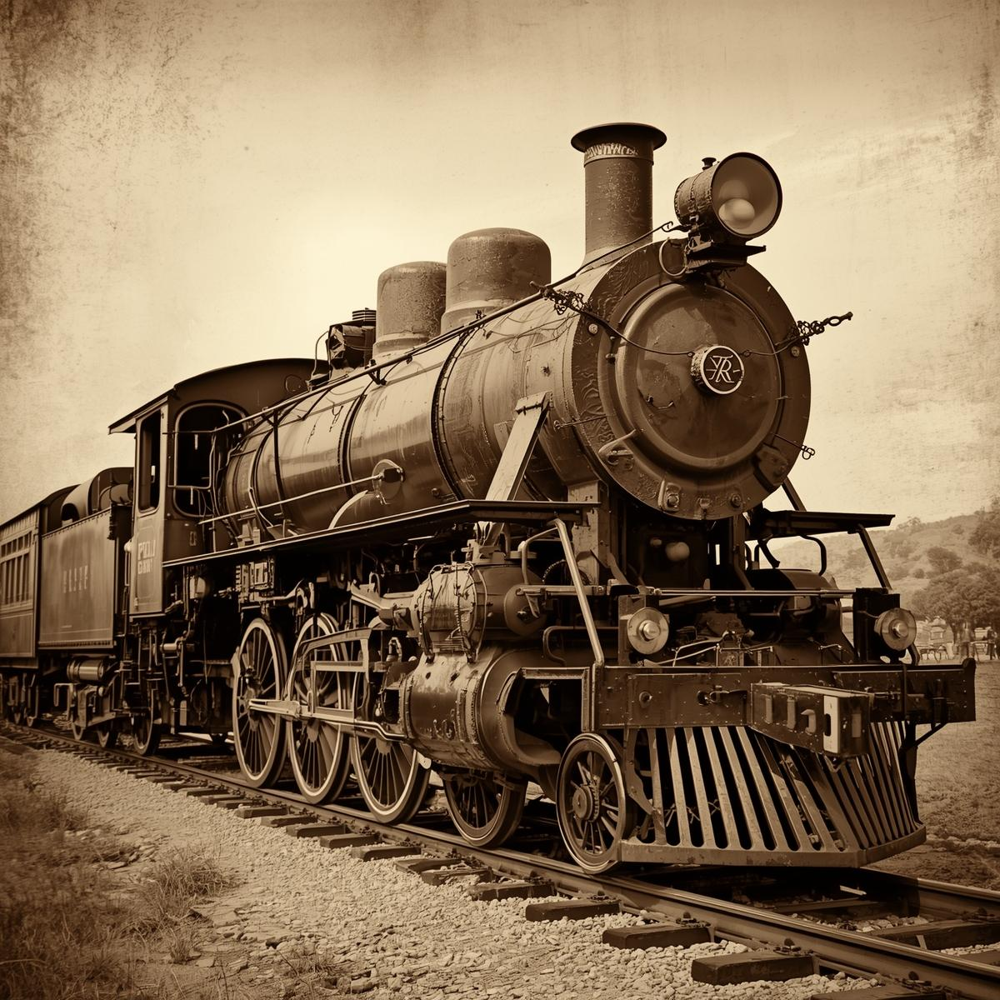

Ferrocarriles 🚂
La red creció de 700 a 20,000 km, conectando puertos y fronteras. Un símbolo del progreso a toda costa.
El orden impuesto por Díaz fue el pretexto para abrir las puertas a una oleada de inversión extranjera sin precedentes.
La Paz trajó la expansión ferroviaría. ¿Quiénes financiaron y controlaron las vías?
LEER MASLa minería experimentó un auge sin precedentes. ¿Qué tan nacional era este "boom"?
LEER MASSe modernizaron industrias como la textil y se instalaron plantas eléctricas. ¿Quién era el dueño?
LEER MASEl gobierno de Díaz recurrió a grandes préstamos internacionales. ¿Cuál fue el costo para el país?
LEER MASExplora el modelo de crecimiento basado en la exportación de materias primas que transformó el paisaje del país.
La red creció de 700 a 20,000 km, conectando puertos y fronteras. Un símbolo del progreso a toda costa.
La inversión estadounidense y británica dominó la extracción de oro, plata y cobre, impulsando la exportación.
Se modernizaron puertos clave como Veracruz y Tampico para facilitar la salida de productos hacia mercados internacionales.

Aunque incipiente, la explotación petrolera se inició por empresas extranjeras como la Standard Oil y Pearson.
La red creció de 700 a 20,000 km, conectando puertos y fronteras. Un símbolo del progreso a toda costa.
La inversión estadounidense y británica dominó la extracción de oro, plata y cobre, impulsando la exportación.
Una pequeña oligarquía que adoptó la cultura francesa, dueña de grandes haciendas y beneficiaria de las concesiones.
Explora el modelo de crecimiento basado en la exportación de materias primas que transformó el paisaje del país.
Causa: Mineros de Sonora exigieron "salario igual por trabajo igual" frente a la discriminación salarial y las peores condiciones laborales que sufrían respecto a los empleados estadounidenses.
Resultado: Fue violentamente reprimida. La intervención de rangers estadounidenses en territorio mexicano, con el permiso de Díaz, demostró la complicidad del gobierno con el capital extranjero.
Causa: Obreros textiles de Veracruz protestaron contra el Reglamento Interior de Trabajo y las tiendas de raya. La mediación fallida de Díaz a favor de los empresarios provocó un estallido social.
Resultado: El ejército masacró a cientos de obreros y sus familias. Es considerado uno de los eventos que más indignación generó en el preludio de la Revolución.
Líderes: Liderado por los hermanos Flores Magón (Ricardo, Enrique y Jesús), fue la principal fuerza de oposición intelectual y social.
Plataforma: Su programa demandaba la jornada de 8 horas, salario mínimo, prohibición de las tiendas de raya, y reformas agrarias, influyendo directamente en la Constitución de 1917.
Los errores políticos y la creciente oposición popular desataron la crisis final.
Díaz declara al periodista James Creelman que México estaba listo para la democracia y que no buscaría la reelección en 1910, desatando la efervescencia política.
Francisco I. Madero, bajo la bandera de "Sufragio Efectivo, No Reelección", publica su libro y funda el Centro Antirreeleccionista de México.
Díaz encarcela a Madero y es "reelegido" en unas elecciones fraudulentas, ignorando su promesa de Creelman.
Madero se fuga y promulga el Plan, declarando nulas las elecciones y llamando al pueblo a levantarse en armas el 20 de noviembre.
Se firma el acuerdo entre Madero y el gobierno de Díaz. El punto clave fue la renuncia de Díaz a la presidencia, marcando formalmente el fin de su régimen.
Díaz abandona México por el puerto de Veracruz, iniciando su exilio en París, donde pasaría el resto de su vida.
Tras la presidencia interina de León de la Barra, Francisco I. Madero es electo presidente, generando grandes expectativas de cambio democrático en el país.
Un golpe militar en la capital, liderado por Victoriano Huerta, culmina con el asesinato de Madero y su vicepresidente, Pino Suárez, sumiendo al país en una guerra civil.
Los errores políticos y la creciente oposición popular desataron la crisis final.
La reacción contra el dominio extranjero forjó una identidad nacionalista que se codificó en la Constitución de 1917.
El Artículo 27 (propiedad de la tierra y subsuelo) es una respuesta directa y fundamental a las concesiones a extranjeros del Porfiriato.
Aunque desigual, la infraestructura (ferrocarriles, electricidad, fábricas) legada fue la base para el desarrollo posterior del país.
Las grandes empresas de la época (textiles, cerveza, acero) sobrevivieron y crecieron, centralizando la economía en ciertas regiones.
La concentración de tierras en haciendas gigantescas generó un conflicto que la Revolución no pudo resolver por completo.
La demanda de "Tierra y Libertad" de Emiliano Zapata fue la fuerza motriz de la lucha campesina y el origen del reparto agrario.
Costo de un vestido: Un solo vestido de París podía costar el salario anual de diez peones.
Propiedad de la Tierra: Menos de 1,000 familias poseían la mayoría de las tierras cultivables del país, organizadas en grandes haciendas.
Deuda Perpetua: Los salarios eran pagados con vales canjeables solo en la tienda de raya, donde los precios eran inflados, haciendo la deuda hereditaria.
Mortalidad Infantil: La falta de higiene y nutrición causaba una alta tasa de mortalidad infantil, contrastando con la salud de la élite.